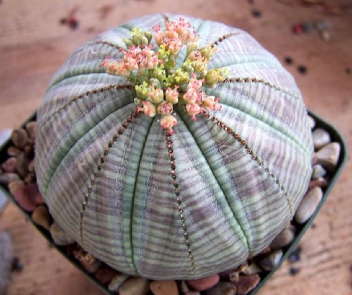

В царстве флоры
Фонтастические комнатные растения,о которых многие даже не подазревают
Сегодня фиалками,кактусами,рододендроном и прочей красотоймникого не удивишь. Это растения можно увидеть на подоконниках квартир офисов.Но в царстве флоры ещё достаточно чудеснфх растений,которые выглядят,как пришельцы с другой планеты. Они неприхотлливы и при этом невероятны!
Примеры фантастических растений

|

|

|

|
 | ||
| Суккуленты-дельфины (Senecio peregrinus) | Японский мох маримо (Marimo moss balls) | Неприхотливая трахиандра (Trachyandra) | Крассула умбелла (Crassula umbella) | Молочай тучный (Euphorbia obesa) | ||
| Научное название растения с листьями, которые напоминают дельфинов - крестовик перегринус. | Зеленый шарик водоросли в японских семьях принято передавать по наследству, потому что приносит благополучие и удачу в дом. | Африканское чудо напоминает кудри волос, растущие снизу вверх. | Красивое и необычное растение, которое сотворила природа. | Экзотическое зеленоватое растение очень часто путают с кактусом, хотя колючек у него нет | ||
| Нет аллергии | Нет аллергии | Может быть аллергия | Нет аллергии | |||
{kind=link}